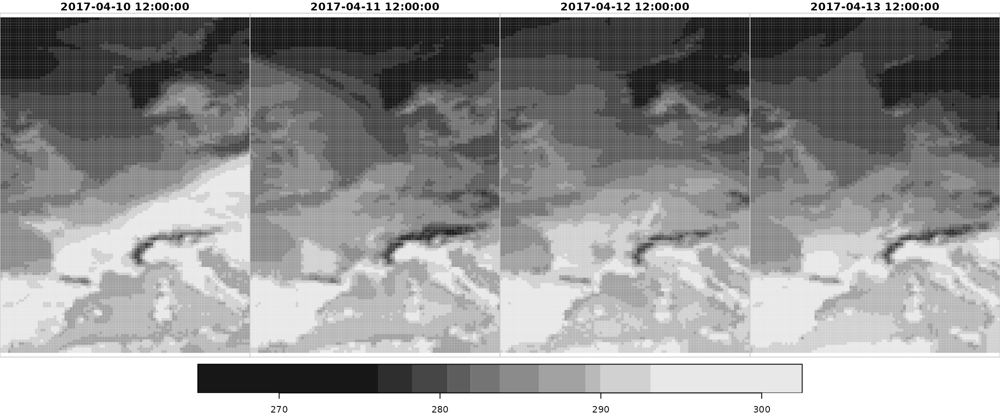
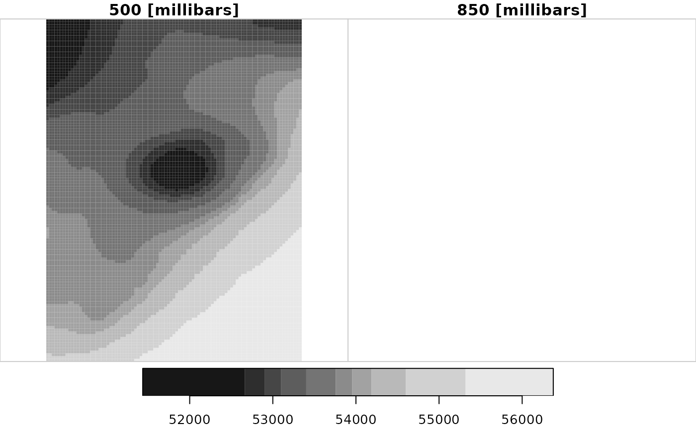
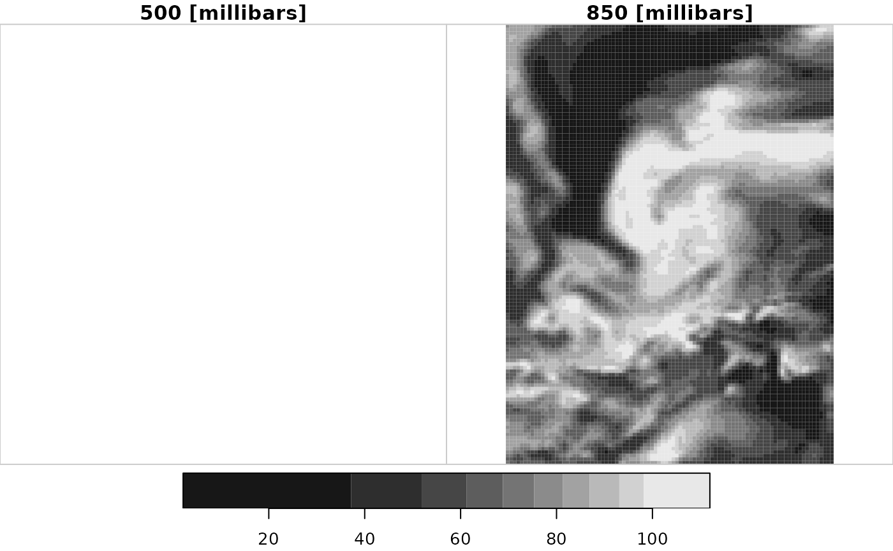

This example shows how to download gridded analysis data. The data set is based on ECMWFs latest ERA5 reanalysis.
Surface data
Specify data to be downloaded
The first step required is setting up a configuration object using the function eupp_config(). The object returned contains the user specification of the data to be retrieved.
In this case analysis data for three consecutive months in 2017 are processed but limited to only two surface variables "2t" (2m air temperature) and "cp" (convective precipitation) for steps = 12 which, in case of analysis data, corresponds to the time of the day (12 UTC).
If not sure which variables/steps are available please have a look at section “Available analysis data” and the main README file.
# Loading the package
library("eupp")
# Create 'Dates' vector from April 1, 2017, to June 30, 2017.
dates <- seq(as.Date("2017-04-01"), as.Date("2017-06-30"), by = 1L)
# Create custom configuration
conf <- eupp_config(product = "analysis",
level = "surface",
date = dates, # dates
parameter = c("2t", "cp"), # two different parameters/variables
steps = 12, # 12 o'clock (UTC)
cache = "_cache") # cache is not requiredThe object conf allows to download (and process) the data in step two.
print(conf)## EUPP Config
## Product: analysis (ana)
## Level: surface
## Date(s): 91 dates
## Parameter: 2t, cp
## Hours: 12
## Version: 0
## Cache: _cache
## Area: not defined@TODO: Add info/example about pressure level data and EFI.
Downloading analysis data
For all gridded EUPP data sets three options for downloading the data exist. eupp_download_gridded() allows to download and store the data set on disc (GRIB version 1 or NetCDF). Alternatively the data can directly be retrieved as stars objects.
Note that getting the data in the NetCDF format as well as retrieving the data as stars objects require the ecCodes tools to be installed (namely the console tools grib_set and grib_to_netcdf).
eupp_download_gridded(conf, "_test.grb", "grib", overwrite = TRUE) # GRIB
eupp_download_gridded(conf, "_test.nc", "nc", overwrite = TRUE) # NetCDF
data <- eupp_get_gridded(conf) # starsInterpolated data
Depending on the task at hand sf in combination with stars offer a conveniente combination for getting the data from the EUPP gridded data sets.
The example below shows the extraction of data from the stars object data (see above) containing several months of analysis fields. All needed is an object of class sf or sfc with geometries, or a two-column matrix with points (locations) in rows …
library("sf")
# Create simple features data.frame
locations <- data.frame(name = c("Innsbruck", "Brussels"),
lon = c(11.39, 4.35),
lat = c(47.27, 50.85))
locations <- st_as_sf(locations, coords = c("lon", "lat"))
print(locations)## Simple feature collection with 2 features and 1 field
## Geometry type: POINT
## Dimension: XY
## Bounding box: xmin: 4.35 ymin: 47.27 xmax: 11.39 ymax: 50.85
## CRS: NA
## name geometry
## 1 Innsbruck POINT (11.39 47.27)
## 2 Brussels POINT (4.35 50.85)… to be used in combination with st_extract(). This uses st_extract.eupp_stars(), a function interfacting stars::st_extract.stars().
interpolated <- st_extract(data, locations, bilinear = TRUE)
head(interpolated, n = 3)## Simple feature collection with 3 features and 3 fields
## Geometry type: POINT
## Dimension: XY
## Bounding box: xmin: 4.35 ymin: 47.27 xmax: 11.39 ymax: 50.85
## CRS: NA
## geometry cp t2m time
## 1 POINT (11.39 47.27) 2.660420e-05 285.7626 2017-04-01 12:00:00
## 2 POINT (4.35 50.85) 4.207006e-05 286.0349 2017-04-01 12:00:00
## 3 POINT (11.39 47.27) 5.173817e-05 285.0700 2017-04-02 12:00:00The function st_extract() returns an object of class c("sf", "data.frame") containing the interpolated data and the corresponding sf geometry. In case needed the method offers an additional feature: By providing atname an additional $name variable can be added. The argument atname stands for ‘name of variable in object at’. In case set and found this will be added automatically.
interpolated <- st_extract(data, locations, bilinear = TRUE, atname = "name")
head(interpolated, n = 3)## Simple feature collection with 3 features and 4 fields
## Geometry type: POINT
## Dimension: XY
## Bounding box: xmin: 4.35 ymin: 47.27 xmax: 11.39 ymax: 50.85
## CRS: NA
## geometry name cp t2m time
## 1 POINT (11.39 47.27) Innsbruck 2.660420e-05 285.7626 2017-04-01 12:00:00
## 2 POINT (4.35 50.85) Brussels 4.207006e-05 286.0349 2017-04-01 12:00:00
## 3 POINT (11.39 47.27) Innsbruck 5.173817e-05 285.0700 2017-04-02 12:00:00As we have multiple locations we will append the name of the location via match() to be able to plot both time series (here using ggplot2).
library("ggplot2")
library("ggpubr")
g1 <- ggplot(interpolated) + geom_line(aes(x = time, y = t2m, group = name, colour = name))
g2 <- ggplot(interpolated) + geom_line(aes(x = time, y = cp, group = name, colour = name))
ggarrange(g1, g2, nrow = 2)
Further stars functionality
As eupp_get_gridded() returns an object of class eupp_stars which inherits from stars, complete stars functionality can be used for e.g., plotting or subsetting.
# 4 Dimensions, the first one is along variables
names(data)## [1] "t2m" "cp"
# Extracting convective precipitation only
data_cp_only <- data["cp",,, drop = TRUE]
# var x y time
plot(data["t2m", , , 10:13])
For further details please visit the stars documentation.
Pressure level data
Works in a similar way. Note that there is (currently) no option to specify which pressure level should be downloaded. E.g., the request below will download both geopotential height "z" and relative humidity "r" on all available levels.
As the levels do not overlap some fields seem to be empty when processed via stars as a stars object must be structured (gridded).
config <- eupp_config(product = "analysis",
level = "pressure", # pressure level data
date = "2018-05-01", # one single day
parameter = c("z", "r"), # z and r
cache = "_cache") # optional
data <- eupp_get_gridded(config)
data## stars object with 4 dimensions and 2 attributes
## attribute(s):
## Min. 1st Qu. Median Mean 3rd Qu.
## z [m^2/s^2] 51434.875000 52995.35907 53758.19037 53794.99841 54355.88351
## r [%] 2.138812 56.81674 75.34552 71.25314 89.94898
## Max. NA's
## z [m^2/s^2] 56374.1719 279000
## r [%] 111.9757 279000
## dimension(s):
## from to offset delta refsys point values x/y
## x 1 93 -6.125 0.25 NA NA NULL [x]
## y 1 125 67.125 -0.25 NA NA NULL [y]
## level 1 2 500 [millibars] 350 [millibars] NA NA NULL
## time 1 24 2018-05-01 UTC 1 hours POSIXct NA NULL
plot(data["z"])
plot(data["r"])
Available analysis data
In case you are not sure which fields and/or steps are available simply download the full inventory for one specific day. The resulting data.frame contains all information required.
# Surface fields available
conf_surface <- eupp_config(product = "analysis",
level = "surface",
date = "2017-06-01",
cache = "_cache")
inv_surface <- eupp_get_inventory(conf_surface)
head(subset(inv_surface, select = c(param, init, step, valid)))## param init step valid
## 1 2t 2017-06-01 00:00:00 0 2017-06-01
## 2 10u 2017-06-01 00:00:00 0 2017-06-01
## 3 10v 2017-06-01 00:00:00 0 2017-06-01
## 4 tcc 2017-06-01 00:00:00 0 2017-06-01
## 5 tp 2017-05-31 18:00:00 6 2017-06-01
## 6 cape 2017-06-01 00:00:00 0 2017-06-01
unique(inv_surface$param)## [1] "2t" "10u" "10v" "tcc" "tp" "cape" "stl1" "sshf" "slhf"
## [10] "tcw" "tcwv" "swvl1" "ssr" "str" "sd" "cp" "cin" "ssrd"
## [19] "strd" "10fg" "mx2t" "mn2t"
# Pressure level data available
conf_pressure <- eupp_config(product = "analysis",
level = "pressure",
date = "2017-06-01",
cache = "_cache")
inv_pressure <- eupp_get_inventory(conf_pressure)
head(subset(inv_pressure, select = c(param, levelist, init, step, valid)))## param levelist init step valid
## 1 z 500 2017-06-01 00:00:00 0 2017-06-01 00:00:00
## 2 z 500 2017-06-01 01:00:00 0 2017-06-01 01:00:00
## 3 z 500 2017-06-01 02:00:00 0 2017-06-01 02:00:00
## 4 z 500 2017-06-01 03:00:00 0 2017-06-01 03:00:00
## 5 z 500 2017-06-01 04:00:00 0 2017-06-01 04:00:00
## 6 z 500 2017-06-01 05:00:00 0 2017-06-01 05:00:00
unique(inv_pressure$param)## [1] "z" "u" "v" "q" "t" "r"